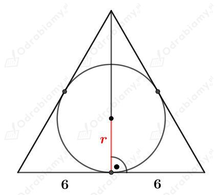
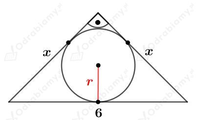
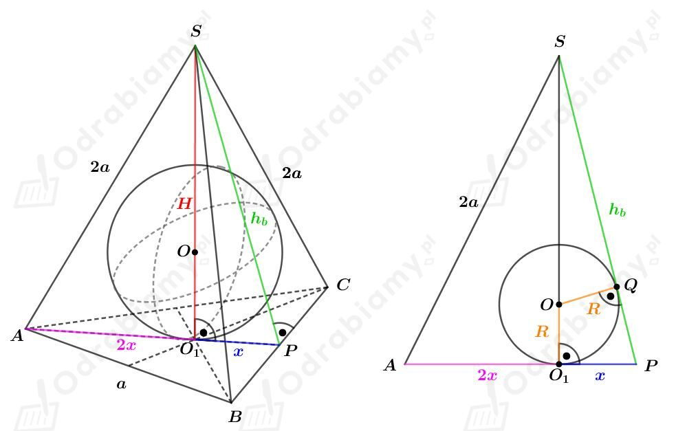
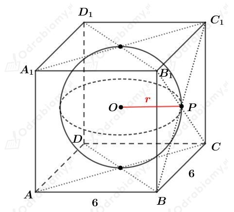
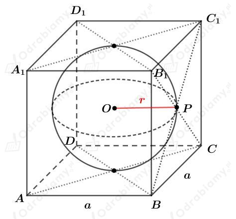
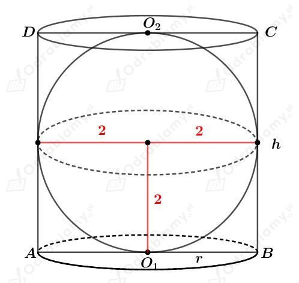
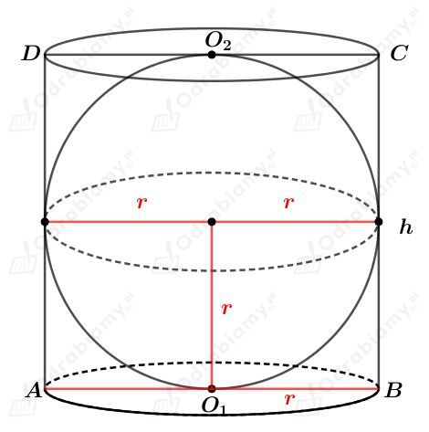
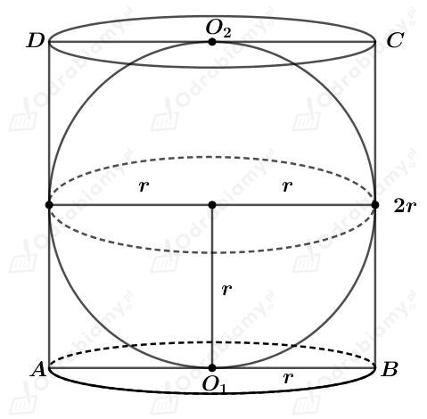

Na kuli opisano stożek.
a)
Przekrój osiowy tego stożka jest trójkątem równobocznym o boku długości 12.
Rysunek:

Długość promienia kuli jest równa długości promienia r okręgu opisanego na trójkącie równobocznym.
Długość r stanowi 1/3 długości wysokości trójkąta równobocznego.
Korzystając ze wzoru na długość wysokości trójkąta równobocznego mamy:
b)
Przekrój osiowy tego stożka jest trójkątem prostokątnym o przeciwprostokątnej długości 6.
Rysunek:

Skoro ten trójkąt jest trójkątem prostokątnym równoramiennym, to
Długość promienia kuli jest równa długości promienia okręgu r opisanego na tym trójkącie prostokątnym.
Korzystając ze wzoru na długość promienia okręgu opisanego na trójkącie prostokątnym mamy:
Rysunek:

Odcinek AP jest wysokością trójkąta równobocznego ABC. Korzystając ze wzoru na długość wysokości trójkąta równobocznego mamy:
oraz
Korzystając z twierdzenia Pitagorasa dla trójkąta BPS mamy:
Korzystając z twierdzenia Pitagorasa dla trójkąta O1PS mamy:
Na mocy cechy kkk wiemy, że trójkąty SOQ i SPO1 są podobne. Mamy zatem:
W sześcian wpisano kulę.
a)
Rysunek:

Długość promienia tej kuli jest równa połowie długości krawędzi tego sześcianu, czyli
Wyznaczmy objętość tej kuli. Mamy:
b)
Rysunek pomocniczy:

Wiemy, że długość przekątnej tego sześcianu jest równa 8. Korzystając ze wzoru na długość przekątnej sześcianu mamy:
Długość promienia tej kuli jest równa połowie długości krawędzi tego sześcianu, czyli
Wyznaczmy objętość tej kuli. Mamy:
Rysunek:
Wyznaczmy objętość tego sześcianu. Mamy:
Długość promienia r kuli wpisanej w sześcian jest równa połowie długości krawędzi tego sześcianu, czyli
Wyznaczmy objętość tej kuli. Mamy:
Wyznaczmy stosunek objętości sześcianu do tej kuli. Mamy:
a)
Dany jest walec opisany na kuli.
Rysunek:

Przekrój osiowy tego walca jest kwadratem, którego bok ma długość podojonej długości promienia kuli wpisanej w ten walec. Zatem
oraz
Wyznaczmy objętość tego walca. Mamy:
b)
Przekrój osiowy tego walca jest kwadratem, którego bok ma długość podojonej długości promienia kuli wpisanej w ten walec. Zatem

Przekrój osiowy walca jest kwadratem o przekątnej długości √2. Mamy zatem
zatem
Promień kuli wpisanej w ten walec ma długość 1/2.
Rysunek:

Wyznaczmy pole powierzchni tego walca. Mamy:
Wyznaczmy pole powierzchni tej kuli. Mamy:
Wyznaczmy stosunek pól powierzchni walca i kuli. Mamy:
Wyznaczmy objętość tego walca. Mamy:
Wyznaczmy objętość tej kuli. Mamy:
Wyznaczmy stosunek objętości walca i kuli. Mamy:
co kończy dowód.